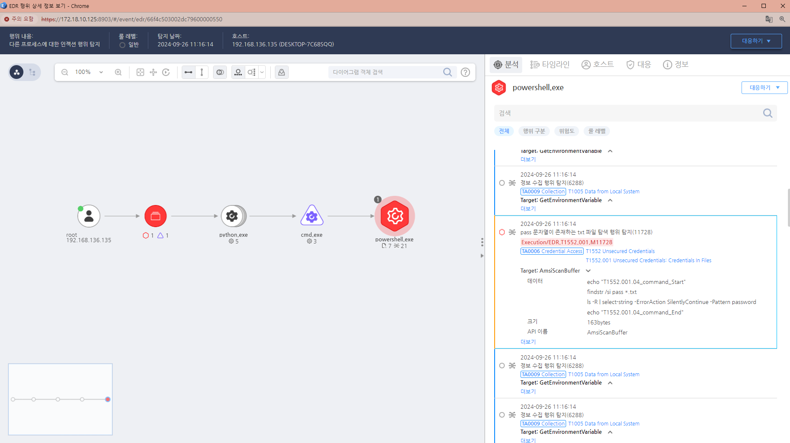

T1552.001.04 Unsecured Credentials: Credentials In Files
D3FEND
MITRE ATT&CK 액션을 기준으로 대응 방안을 작성
Detection
(Action =(contains) "findstr" AND "pass" AND ".txt") AND
(Current Process Name = "powershell.exe)
Detection(EDR)

Response
해당 행위를 수행한 프로세스를 종료합니다.
결과물 출력 파일을 삭제합니다.
공격자에 의해 PC가 제어되었을 가능성이 있으므로 호스트 네트워크를 격리합니다.
공격자 C&C 서버로 추정되는 주소를 차단합니다.
Mitigations
민감한 정보 암호화
- 자격 증명 정보가 포함된 파일은 암호화하여 저장합니다.
- 이를 통해 파일이 노출되더라도, 해당 파일의 내용을 쉽게 읽을 수 없도록 보호할 수 있습니다.
- 예를 들어, AES (Advanced Encryption Standard)와 같은 강력한 암호화 알고리즘을 사용하여 파일 내 민감한 정보를 암호화합니다.
환경 변수 사용
- 자격 증명을 파일에 하드코딩하는 대신 환경 변수를 사용하여 자격 증명을 관리합니다.
- 이렇게 하면 파일에서 자격 증명을 직접적으로 노출하지 않고도 애플리케이션이 이를 사용할 수 있습니다.
- 예를 들어, 애플리케이션에서 필요한 자격 증명을 환경 변수로 설정하고 이를 참조하여 사용할 수 있습니다.
최소 권한 원칙 적용
- 시스템에서 자격 증명이 필요할 때, 최소한의 권한만 부여하도록 설정합니다.
- 사용자와 서비스가 필요한 자격 증명만 갖도록 하여, 공격자가 취약점을 통해 자격 증명을 얻더라도 피해를 최소화할 수 있습니다.
자격 증명 및 민감한 정보 검색 도구 사용
- 시스템 및 소스 코드에서 자격 증명과 민감한 정보를 검색할 수 있는 도구(예: Git Secrets, TruffleHog)를 사용하여, 이러한 정보가 포함된 파일을 사전에 탐지하고 제거합니다.
- 이러한 도구는 코드 리포지토리에서 불필요한 민감한 정보를 포함하지 않도록 도와줍니다.
로그 파일 관리
- 로그 파일에 민감한 정보가 기록되지 않도록 설정합니다.
- 특히, 로그인 정보나 API 키가 로그에 기록되지 않도록 하고, 로그 파일을 정기적으로 검토하여 민감한 정보가 기록되지 않도록 관리합니다.
- 로깅 시 민감한 정보를 필터링하거나 마스킹하는 방식을 활용합니다.
보안 교육 및 인식 제고
- 개발자 및 시스템 관리자를 대상으로 민감한 정보를 안전하게 처리하는 방법에 대한 교육을 실시합니다.
- 자격 증명 정보가 포함된 파일을 안전하게 관리하는 방법을 숙지하도록 합니다.
- 보안 우선 사고 사고를 예방하기 위해 정기적인 보안 교육을 진행합니다.
취약점 관리 및 패치 적용
- 자격 증명이 노출될 수 있는 시스템의 취약점을 지속적으로 모니터링하고, 관련 보안 패치를 즉시 적용합니다.
- 이를 통해 공격자가 파일 내 자격 증명을 악용할 수 있는 경로를 차단합니다.
정기적인 보안 감사
- 시스템 및 애플리케이션에서 자격 증명이 안전하게 관리되고 있는지 정기적으로 감사합니다.
- 자격 증명이 포함된 파일이나 코드가 존재하는지 확인하고, 이를 해결하기 위한 조치를 취합니다.
Affected Techniques
Action 실행시 함꼐 영향을 받는 다른 Techniqes
| D3FEND |
| D3-PLA Process Lineage Analysis |
| D3-FAPA File Access Pattern Analysis |